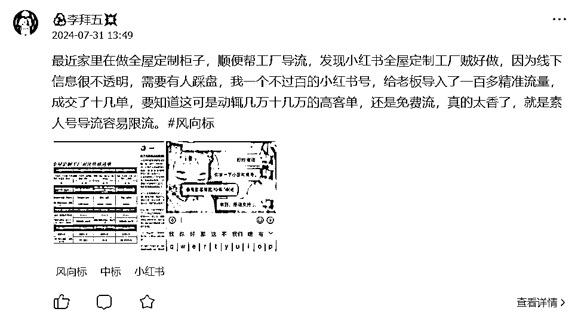
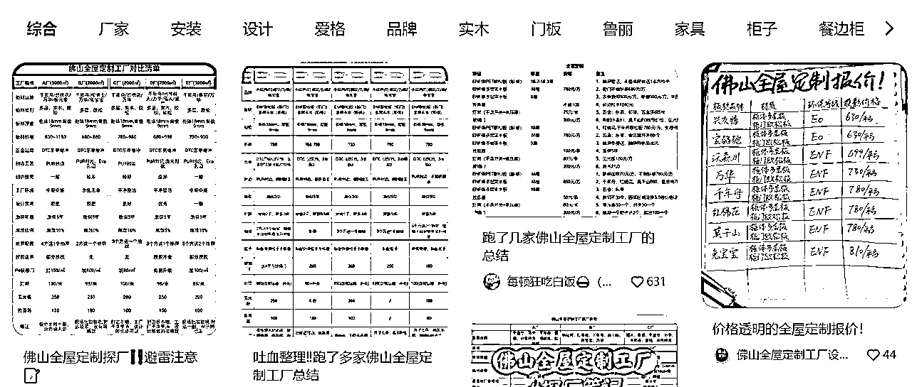
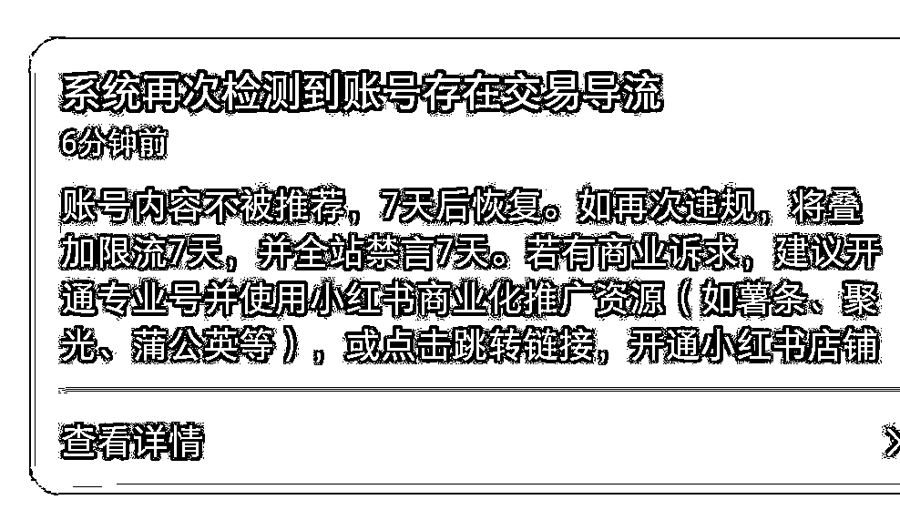
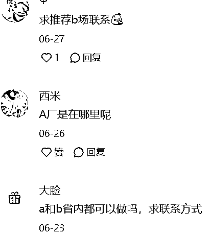
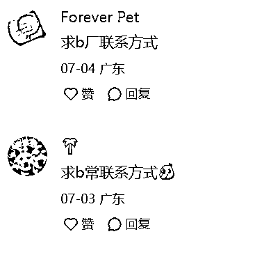
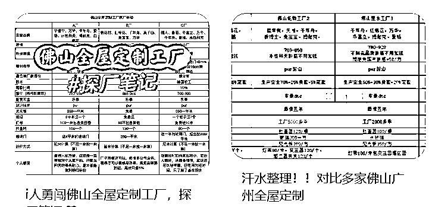

来源：https://gq2psr73l6v.feishu.cn/docx/HvQYdXuZsop5OUxpDLocjlnKnhh
大家好，我是李拜五（Ray），写过一篇精华帖，做成了几个0-1的项目，赚了大概20倍门票，但是始终无法1-10。好久没在生财分享过经验贴了，因为最近一直在失败哈哈。
前两天发了个全屋定制工厂引流的风向标，结果中标了，还挺多圈友感兴趣。今天就给大家浅浅拆解一下小红书同城高客单引流的玩法。希望对大家有启发，有资源的，可以直接上矩阵哈哈!

之前写的几篇文章，我也放在这，感兴趣的可以了解一下哈哈，也欢迎在做小红书引流获客圈友来链接交流呀~
第七期还没开始，我已经通过白嫖生财赚到第一张门票了
说起来也是偶然，两年前在佛山买的房子准备交楼了，于是打算做全屋定制柜子，发现这行水很深，他不像家具，灯具，家电等已经做到很透明了，可以直接线上购买，而且也有电商保障。但是唯独全屋定制，就算你在线上做了很多攻略，线下一样有非常多的坑，翻车案例不计其数。
于是我就在很多平台做攻略，发现小红书的质量是最高的，而且这种踩盘形式的攻略贴基本没有商家在布局，全是素人在做，妥妥的蓝海项目。

在线上咨询了几十家全屋定制工厂，线下跑了七八家后，我定下了其中一家工厂，并且老板说成交一套可以按照面积返点。
目前我就只给他写了两篇笔记，纯自然流的情况下一个月引了近百人，素人小号不到一百粉，笔记点赞也不过百，但是底下评论全是精准客户，妥妥的低粉高获客，不过我也因此喜提限流一次。

可能有圈友没了解过装修，简单给大家科普下：
全屋定制可能是整个软装过程中花费最大的一个项目了，而且行业水很深，坑很多！
代表的有索菲亚，欧派等，有品牌溢价，比如全屋定制品牌连锁店的颗粒板，一般在 1000+一个方，同样的颗粒板加工厂可能就几百一个方。看似便宜，实际上最后要付的钱肯定会比这个所谓的套餐价多很多。
找工厂做无疑会比品牌定制店更省钱，同等的标准来对比，价格不用说就肯定是厂家的优势。总体做下来还是比品牌要便宜很多的，前提是你要花费非常多时间精力去找一个靠谱的工厂。
了解了背景之后，其实整个流程非常简单，就是给全屋定制工厂引流获客。因为工厂肯定是没有精力去对接这么多散单，他也不懂怎么在小红书做营销。
这就给了我们一个机会，一方面是工厂需要客资，另一方面是很多人在找靠谱工厂推荐，我们需要做的就是打通着两方，在中间赚钱，这个模式后面我才发现叫打粉。
就像圈友孙策说的：同城是普通人拿到大机会为数不多的流量洼地。同城的优势：竞争小，竞争对手就那么几个，打败同城的对手就能占领这个城市的制高点。
而且我们是跟传统工厂去抢市场做线上流量，跟他们竞争，基本上是降维打击。
全屋定制柜子客单价一般在几万到几十万不等。
目前我推荐的人数还不多，后续应该还能再谈。
目前工厂老板给我的成交价格是：
柜子面积30平以下--800元/套
柜子面积30平以上--1000元/套
据说还可以谈5%的返点
我们的身份是作为一个素人推荐，只要加到客户微信，工作就完成了，后面的工作都是由工厂老板那边完成的。
比如发布小红书笔记，有人评论的话加我微信倒流到老板，其余的交给老板就行了。
客户拿到老板地址后线下去看工厂，觉得合适就交定金给老板即可，因为这个工厂是我挑选过的，综合方面都还可以，很多对比了其他工厂以后都会选我这个老板。
不同于我之前做的其他项目，点赞收藏一堆但是毫无转化，这个项目不用看点赞，不用看收藏，只看评论私信即可。基本上搜索来的都是同城精准粉丝，比如搜佛山全屋定制工厂的。
而且上评论的也全是精准的要求推荐工厂的，所以导流到微信成功率也是很高。类似下面这种评论


让用户一眼就知道你是谁，可以用xxx（装修中），一般就是贴合素人的昵称最好
发一下自己的家里户型面积是多少，比如：
佛山套内76方三房两卫🏠
装修小白正在装修中🔧
不定时分享装修日志📔
显得人设更加真实
攻略集合类的笔记封面是最受欢迎的，确定好一家你想推的工厂，其他工厂可以变来变去，表格的形式也是可以变来变去，能出很多期笔记。

虽然我的还没做，但是看了傅超人的境外游攻略，感觉置顶笔记一定要做：
因为高客单价的成交都是基于信任，尤其是内容平台，互联网刷到的，一定要做好这一块。核心逻辑，凸显出自己的真诚，真实人设。
瞬间里面放自己的微信号不容易被识别出来，可以引导别看瞬间即可，防止封号限流。
也是规避限流的一种方式，引导他们进群，然后看瞬间加微信，同时可以积累自己的粉丝群。